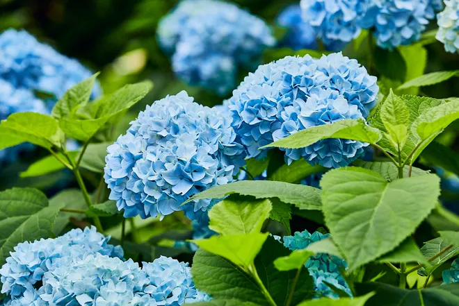

Hydrangea macrophylla

Common Name:
The flower is commonly known as a Hydrangea, specifically a Bigleaf Hydrangea or Mophead Hydrangea.
Scientific Name:
Its scientific name is Hydrangea macrophylla.
Characteristics:
This species is known for its large, rounded flower heads, which can be pink, purple, or blue, depending on the soil's acidity. The image displays blue blooms, indicating an acidic soil environment.
back to home